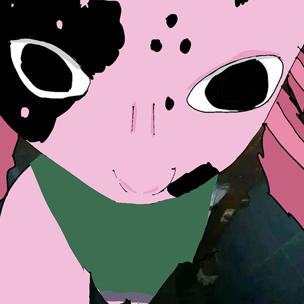

Cass/Cassie Hower
one line or our job title



hi! I'm cass or cassie and I dont really have rponouns so any is fine. I'm majoring in graphic design A.A.S and almost close to my degree. Reason why I am here is because of my degree but also I wanted to learn this part of graphic design since I have little experinse with coding. I do want to start a little small business where to make graphic design afforable but I also want to make comic series. I like to think I'm strong on the creativty, packaging my files part in graphic design including illustration. "Ghost Rider" is my fav, and why it stucked to me is because of the creatvity of the movie, how the spirit "ghost rider sees the evil of the people that look him in the eyes, or how they did the first transformation of the ghost rider.